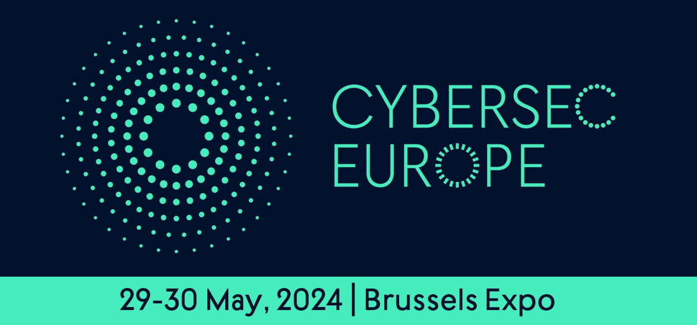
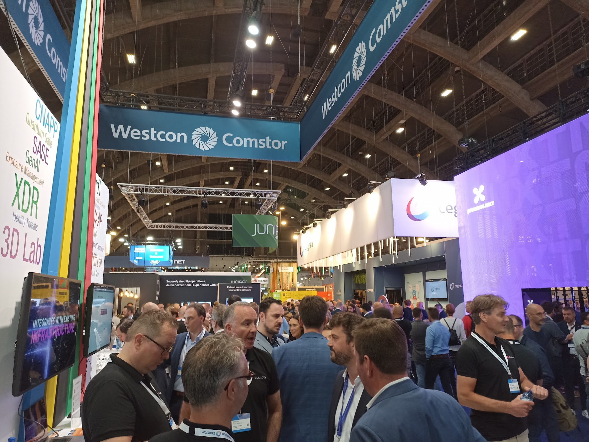

Cybersec Europe 2024 was a major cybersecurity event held in Brussels,
Belgium on May 29th and 30th, 2024. It served as a key platform for cybersecurity professionals to exchange information, foster collaboration, and address the growing challenges of cyber threats.
Here’s a quick rundown of the event:
- Focus: Cybersecurity, fostering innovation in the field.
- Target Audience: Cybersecurity experts, policymakers, tech enthusiasts, and professionals from various sectors.
- Activities: Keynotes by industry leaders, workshops, exhibitions showcasing cutting-edge solutions, and networking opportunities.
- Organizers: A collaborative effort among organizations like the European Cyber Security Organisation (ECSO) and Brussels Expo.
While the event itself has concluded, you might find resources from the conference organizers or participants online, which could include presentations, reports, or news articles.

I went to Cybersec Europe 2024 in Brussels, and it was a whirlwind of information, demos, and top-notch speakers! It felt like the entire cybersecurity community was there, buzzing with energy and sharing the latest advancements in the field.
Vendor Showdown: Security Solutions Galore
My days were packed with visiting vendor booths, each showcasing innovative solutions to combat today’s ever-evolving threats. Here are some highlights:
- Microsoft Security Copilot: This caught my eye - an AI-powered assistant that integrates with existing security tools. It promises to streamline threat detection and response, something I’m definitely interested in exploring further.
- Kaspersky Threat Intelligence Portal: Kaspersky always delivers strong threat intel, and their portal looked like a comprehensive resource for staying on top of the latest cyber threats.
- Palo Alto Networks Cortex: Another contender in the threat intelligence space, Cortex seemed to offer a robust platform for analyzing and contextualizing security data.
- Thales Cyber Range: Virtual training grounds for cybersecurity professionals? This was a cool concept from Thales. Simulating real-world attack scenarios in a safe environment is a great way to hone incident response skills.
Leveling Up Your Skills: SANS Training & GIAC Certifications
Another session that stood out was learning more about SANS’s training programs. They’ve built a strong reputation for offering in-depth, hands-on cybersecurity education. These programs, coupled with their GIAC certifications, seem like a valuable path for both aspiring and seasoned security professionals looking to refine their skillsets and stay relevant in this ever-changing field.
Demystifying the MITRE ATT&CK Framework
One of the most insightful sessions I attended was Exclusive Networks’ talk on the MITRE ATT&CK framework. This standardized approach to describing attacker tactics, techniques, and procedures (TTPs) is a game-changer for threat hunting and defense strategies. Understanding how attackers operate allows defenders to anticipate their moves and implement more effective countermeasures.
Overall Impressions: Collaboration is Key
Cybersec Europe solidified one key takeaway: collaboration is crucial in the fight against cybercrime. From vendors working together to offer integrated solutions to industry thought leaders sharing best practices, it’s clear that a unified front is essential to staying ahead of the curve. This conference was a goldmine of information, and I’m eager to dive deeper into the resources I collected and implement the insights I gained. Here’s to building a more secure digital future, together!